library(tidyverse)
library(broom)
library(ggbeeswarm)Bioinformatics Midterm Exam 2026
Load libraries
you will need “tidyverse”, “broom” and “ggbeeswarm” (hint library()) if you miss library install it with install.packages()
Load dataset
- load “mice_weights_and_diet.tsv” data sets and tissue_gene_expression.tsv
mice_weights <- read_tsv("data/mice_weights_and_diet.tsv")
GeneExpression <- read_tsv("data/tissue_gene_expression.tsv")Examine Data
- Inspect the mice_weights object with
head(),tail()
mice_weights %>% head()# A tibble: 6 × 8
mouse_id body_weight bone_density percent_fat sex diet gen litter
<chr> <dbl> <dbl> <dbl> <chr> <chr> <dbl> <dbl>
1 mouse_1 27.6 0.616 7.26 F chow 4 1
2 mouse_2 23.0 0.769 4.95 F chow 4 1
3 mouse_3 28.7 0.684 6.02 F chow 4 1
4 mouse_4 32.6 0.644 9.54 F chow 4 1
5 mouse_5 28.6 0.530 6.99 F chow 4 1
6 mouse_6 28.2 0.565 6.77 F chow 4 1mice_weights %>% tail()# A tibble: 6 × 8
mouse_id body_weight bone_density percent_fat sex diet gen litter
<chr> <dbl> <dbl> <dbl> <chr> <chr> <dbl> <dbl>
1 mouse_775 42.4 0.623 8.82 M hf 11 2
2 mouse_776 49.0 0.718 10.9 M hf 11 2
3 mouse_777 33.1 0.607 7.70 M hf 11 2
4 mouse_778 38.6 0.749 5.67 M hf 11 2
5 mouse_779 46.4 0.689 10.1 M hf 11 2
6 mouse_780 50.0 0.519 12.9 M hf 11 2- What are the dimensions of mice_weights?
dim(mice_weights)[1] 780 8Subsetting Data using base R
- Select the 2nd column of mice_weights only using square brackets.
mice_weights[,2] %>% head()# A tibble: 6 × 1
body_weight
<dbl>
1 27.6
2 23.0
3 28.7
4 32.6
5 28.6
6 28.2- Select the 42nd row of mice_weights using square brackets.
mice_weights[42,]# A tibble: 1 × 8
mouse_id body_weight bone_density percent_fat sex diet gen litter
<chr> <dbl> <dbl> <dbl> <chr> <chr> <dbl> <dbl>
1 mouse_42 30.5 0.546 7.84 F chow 7 1- Select rows 10 to 25 and columns 1 and 5 using square brackets from mice_weights.
mice_weights[10:25,c(1,5)]# A tibble: 16 × 2
mouse_id sex
<chr> <chr>
1 mouse_10 F
2 mouse_11 F
3 mouse_12 F
4 mouse_13 F
5 mouse_14 F
6 mouse_15 F
7 mouse_16 F
8 mouse_17 F
9 mouse_18 F
10 mouse_19 F
11 mouse_20 F
12 mouse_21 F
13 mouse_22 F
14 mouse_23 F
15 mouse_24 F
16 mouse_25 F - Select the
sexcolumn using a dollar sign from mice_weights
mice_weights$sex %>% head[1] "F" "F" "F" "F" "F" "F"- Find the the minimum and maximum of mice_weights
mice_weights %>%
summarize(min(body_weight), max(body_weight))# A tibble: 1 × 2
`min(body_weight)` `max(body_weight)`
<dbl> <dbl>
1 18.1 65.2- Use
arrange()to rearrange the “percent_fat” table so the largest entry is the first in mice_weights
mice_weights %>%
arrange(desc(percent_fat)) %>% head()# A tibble: 6 × 8
mouse_id body_weight bone_density percent_fat sex diet gen litter
<chr> <dbl> <dbl> <dbl> <chr> <chr> <dbl> <dbl>
1 mouse_541 65.2 0.627 22.2 F hf 9 1
2 mouse_668 58.6 0.709 20.0 M hf 8 1
3 mouse_673 57.1 0.622 19.9 M hf 8 1
4 mouse_477 52.6 0.530 19.8 F hf 8 1
5 mouse_651 51.9 0.686 19.5 M hf 7 2
6 mouse_402 49.7 0.569 18.6 F hf 4 2- Find the mean and standard deviation of litter size for female sex (hint: use
filter,group_by(),summarize) from mice_weights.
mice_weights %>%
filter(sex == "F") %>%
group_by(diet) %>%
summarize(average = mean(litter),
stdev = sd(litter))# A tibble: 2 × 3
diet average stdev
<chr> <dbl> <dbl>
1 chow 1.38 0.485
2 hf 1.5 0.501- Find the find average weights and standard deviation for male and female on different diets (hint: use
group_by()) in mice_weights dataset.
mice_weights %>%
group_by(sex, diet) %>%
summarize(average = mean(body_weight),
stdev = sd(body_weight))`summarise()` has regrouped the output.
ℹ Summaries were computed grouped by sex and diet.
ℹ Output is grouped by sex.
ℹ Use `summarise(.groups = "drop_last")` to silence this message.
ℹ Use `summarise(.by = c(sex, diet))` for per-operation grouping
(`?dplyr::dplyr_by`) instead.# A tibble: 4 × 4
# Groups: sex [2]
sex diet average stdev
<chr> <chr> <dbl> <dbl>
1 F chow 27.8 4.82
2 F hf 31.7 7.06
3 M chow 35.4 5.91
4 M hf 41.9 6.87Graphics
- load
tissue gene expressionif you didn’t do at at step 1 and look at it withhead()
# GeneExpression <- read_tsv("data/tissue_gene_expression.tsv")
GeneExpression %>% head()# A tibble: 6 × 502
sample tissue MAML1 LHPP SEPT10 B3GNT4 ZNF280D SOX12 C21orf62 PER3 HOXA10
<chr> <chr> <dbl> <dbl> <dbl> <dbl> <dbl> <dbl> <dbl> <dbl> <dbl>
1 cerebell… cereb… 9.83 8.33 5.50 8.69 5.64 6.25 5.84 8.33 5.52
2 cerebell… cereb… 9.63 8.54 5.64 8.83 5.69 6.29 6.07 8.26 5.53
3 cerebell… cereb… 9.69 8.48 5.72 8.50 5.96 6.22 5.77 9.10 5.60
4 cerebell… cereb… 9.99 8.51 5.79 8.42 5.74 6.51 5.85 9.21 5.56
5 cerebell… cereb… 9.58 8.37 5.78 8.82 5.63 6.20 5.97 8.50 5.60
6 cerebell… cereb… 9.86 8.28 5.72 8.73 5.71 6.37 5.77 8.77 5.68
# ℹ 491 more variables: HOXC5 <dbl>, BLVRB <dbl>, ZIM2 <dbl>, HEMK1 <dbl>,
# FAP <dbl>, MAN1A1 <dbl>, CDA <dbl>, HTR7P1 <dbl>, DALRD3 <dbl>, FIBP <dbl>,
# TTTY15 <dbl>, SLC30A1 <dbl>, SHANK2 <dbl>, MSL2 <dbl>, UBOX5 <dbl>,
# DUSP13 <dbl>, GJB5 <dbl>, MTF2 <dbl>, PPP1CA <dbl>, IGHMBP2 <dbl>,
# VEGFA <dbl>, KANSL1L <dbl>, FCN3 <dbl>, USP32P2 <dbl>, HIVEP3 <dbl>,
# HRH1 <dbl>, HDAC7 <dbl>, HTT <dbl>, IDH3A <dbl>, TLR3 <dbl>, F11R <dbl>,
# MOAP1 <dbl>, ISOC2 <dbl>, CLIP3 <dbl>, FZD10 <dbl>, VOPP1 <dbl>, …scater plot
- from “Gene Expression” dataset make scatter plot of correlation of two randomly selected genes
GeneExpression %>%
ggplot(aes(SOX12, INF2)) +
geom_point()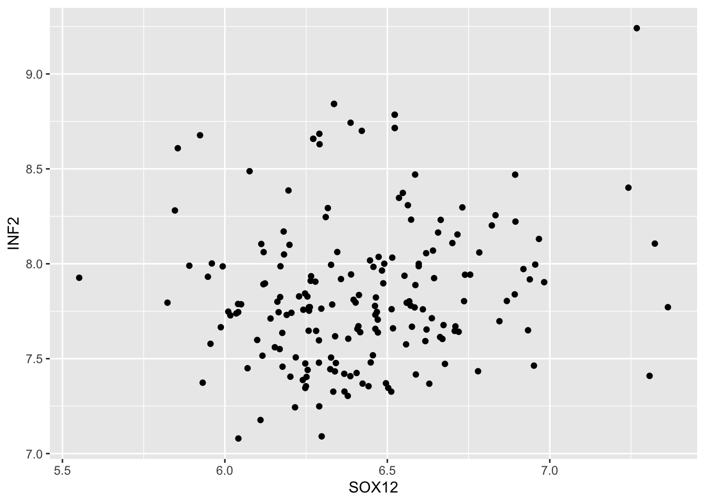
Scater plot w/ linear fit
- add linear trend line to you plot and change the plot theme with
theme_bw()ortheme_classic()ortheme_minimal()or any othertheme_...extension
GeneExpression %>%
ggplot(aes(SOX12, INF2)) +
geom_point() +
geom_smooth(method = "lm") +
theme_minimal()`geom_smooth()` using formula = 'y ~ x'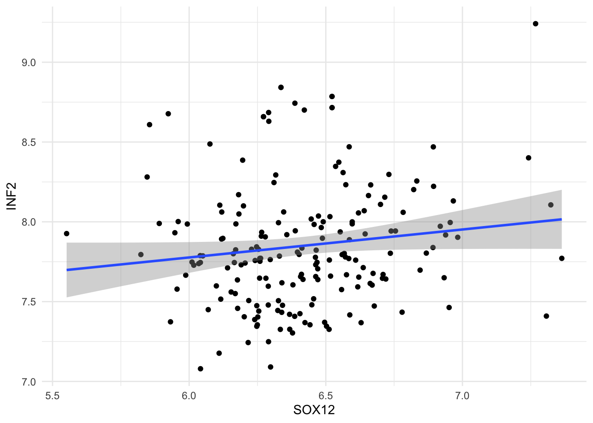
- Modified previous plot by splitting data by tissue of origin when plotting this correlation and switching off standard error
se = Foption
GeneExpression %>%
ggplot(aes(SOX12, INF2, color = tissue)) +
geom_point() +
geom_smooth(method = "lm", se = F) +
theme_bw()`geom_smooth()` using formula = 'y ~ x'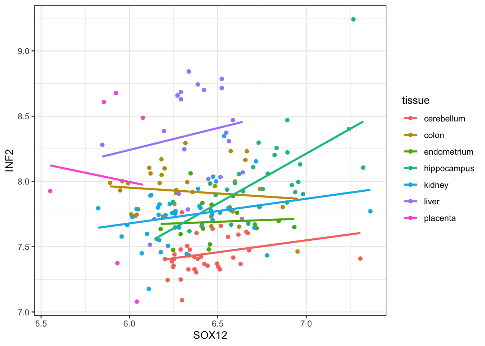
Box plot
- Pick one random gene and make Box plot of it with tissues type on x-axis, expression level on y-axis and color (
fillcolor) by tissue.
GeneExpression %>%
ggplot(aes(x = tissue, y=INF2, fill = tissue)) +
geom_boxplot() +
geom_jitter(width = 0.2, alpha = 0.5) +
theme_bw()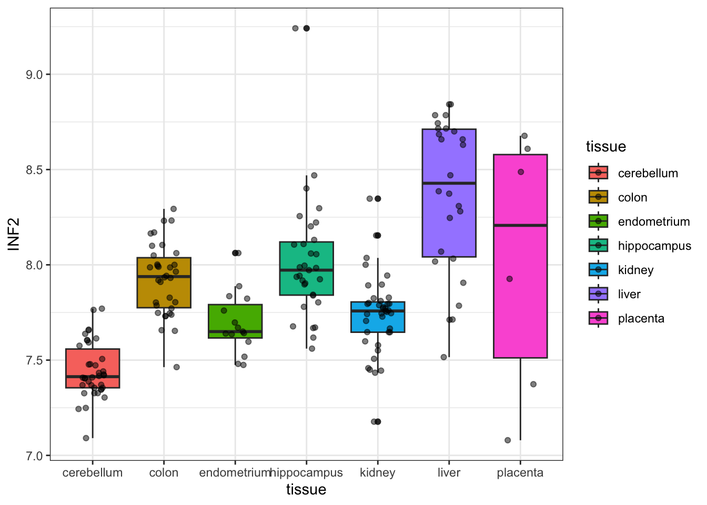
Density plot
- change previous plot of your randomly selected gene to density plot and color by tissue type (set
alpha=0.2in density plot)
GeneExpression %>%
ggplot(aes(x=INF2, color = tissue, fill=tissue)) +
geom_density(alpha=0.2) +
theme_bw()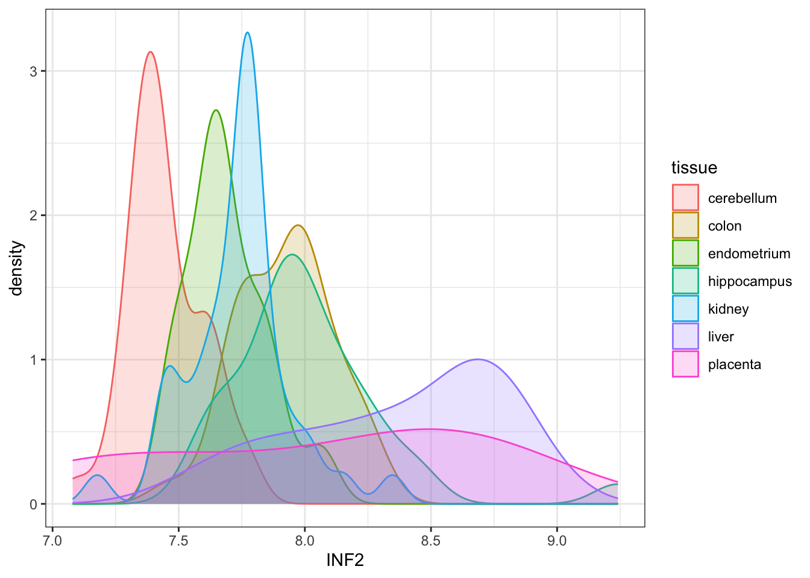
18 to make previous plot more informative facet this plot by tissue use as theme try to use theme_minimal()
GeneExpression %>%
ggplot(aes(x=INF2, color = tissue, fill=tissue)) +
geom_density(alpha=0.2) +
facet_wrap(~ tissue) +
theme_minimal()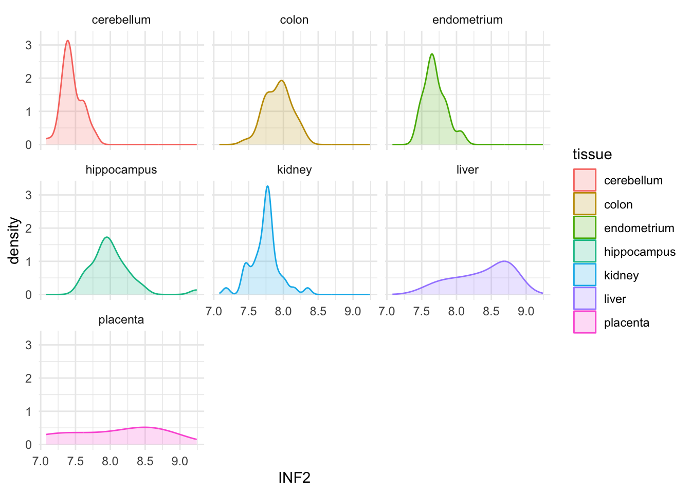
Statistical test
T.Test
- Go back to mice_weights dataset and plot Box plot of
body_weightby diet and sex (use color and faceting) (e.g. x-axissex, y-axisbody_weight,facet bydiet) (extra if you want to make it prettier add points to your boxplot with, try tu usegeom_quasirandom(alpha= 0.5))
mice_weights %>%
ggplot(aes(x= sex, y = body_weight, fill=diet)) +
geom_boxplot(outliers = FALSE) +
geom_quasirandom(alpha= 0.5) +
facet_wrap( ~ diet) +
theme_bw()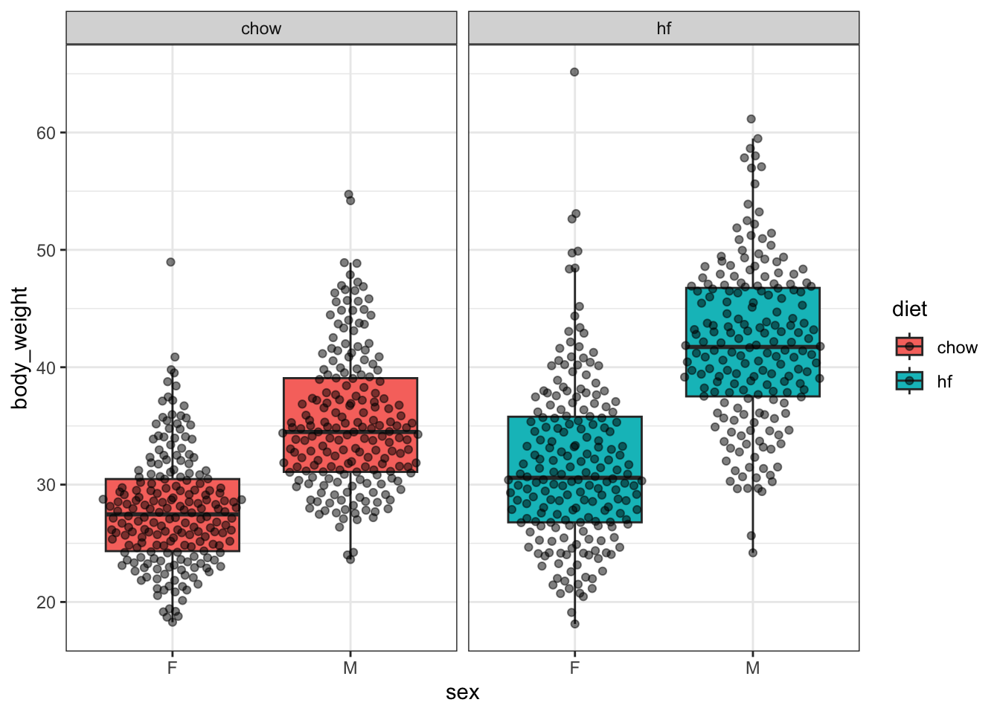
- In mice_weights dataset: Q: Is there effect of diet on weight? (hint use t.test) Plesase answer the question in writing! One sentence is enought.
mice_weights %>% t.test(body_weight ~ diet, data = .) %>% tidy()# A tibble: 1 × 10
estimate estimate1 estimate2 statistic p.value parameter conf.low conf.high
<dbl> <dbl> <dbl> <dbl> <dbl> <dbl> <dbl> <dbl>
1 -5.14 31.5 36.7 -9.34 1.19e-19 719. -6.22 -4.06
# ℹ 2 more variables: method <chr>, alternative <chr>- In mice_weights dataset Q: is there effect of sex on weight? (use t.test) Plesase answer the question in writing! One sentence is enought.
mice_weights %>% t.test(body_weight ~ sex, data = .) %>% tidy()# A tibble: 1 × 10
estimate estimate1 estimate2 statistic p.value parameter conf.low conf.high
<dbl> <dbl> <dbl> <dbl> <dbl> <dbl> <dbl> <dbl>
1 -8.82 29.8 38.6 -18.2 1.95e-61 757. -9.77 -7.87
# ℹ 2 more variables: method <chr>, alternative <chr>ANOVA
- re-plot box plot step 16. Now using ANOVA-test
aovtest if the expression of your gene is different across tissues types Q: Is there a difference of your gene expression across tissue types? Is at least one tissue different in expression then other? Plesase answer the question in writing! One sentence is enought.
GeneExpression %>%
ggplot(aes(x = tissue, y=INF2, fill = tissue)) +
geom_boxplot() +
geom_quasirandom() +
theme_bw()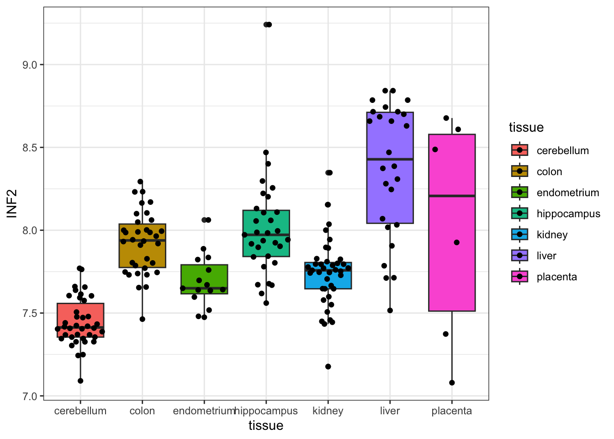
GeneExpression %>% select(tissue, INF2) %>%
aov(INF2 ~ as.factor(tissue), data = .) %>% tidy()# A tibble: 2 × 6
term df sumsq meansq statistic p.value
<chr> <dbl> <dbl> <dbl> <dbl> <dbl>
1 as.factor(tissue) 6 15.3 2.55 34.4 1.34e-27
2 Residuals 182 13.5 0.0740 NA NA - Do post-hoc test of 22. If you see your Anova-test to be significant, at least one tissue has different expression. Which one (two or more) is/are different? Q1: Which two tissue are the most different in your gene expression analysis, Q2: Is there any pair where the difference in expression is not significant (expression is same or comparable)? Plesase answer the question in writing! One sentence is enought.
GeneExpression %>% select(tissue, INF2) %>%
aov(INF2 ~ as.factor(tissue), data = .) %>% TukeyHSD() %>% tidy()# A tibble: 21 × 7
term contrast null.value estimate conf.low conf.high adj.p.value
<chr> <chr> <dbl> <dbl> <dbl> <dbl> <dbl>
1 as.factor(tissue) colon-c… 0 0.479 0.287 0.670 7.59e-11
2 as.factor(tissue) endomet… 0 0.246 -0.00170 0.493 5.29e- 2
3 as.factor(tissue) hippoca… 0 0.569 0.373 0.766 1.42e-13
4 as.factor(tissue) kidney-… 0 0.292 0.107 0.477 1.00e- 4
5 as.factor(tissue) liver-c… 0 0.923 0.716 1.13 1.53e-14
6 as.factor(tissue) placent… 0 0.580 0.223 0.936 5.36e- 5
7 as.factor(tissue) endomet… 0 -0.233 -0.484 0.0186 8.94e- 2
8 as.factor(tissue) hippoca… 0 0.0909 -0.111 0.292 8.30e- 1
9 as.factor(tissue) kidney-… 0 -0.187 -0.377 0.00370 5.86e- 2
10 as.factor(tissue) liver-c… 0 0.444 0.233 0.655 5.49e- 8
# ℹ 11 more rowsLinear modeling
Test linear dependence of two genes that you previously piked in steps 13-15 from Gene Expression dataset.
- Redo plot you did at step 14:
- re-plot gene1 against gene2
GeneExpression %>%
ggplot(aes(SOX12, INF2)) +
geom_point() +
geom_smooth(method = "lm", se = F) +
theme_bw()`geom_smooth()` using formula = 'y ~ x'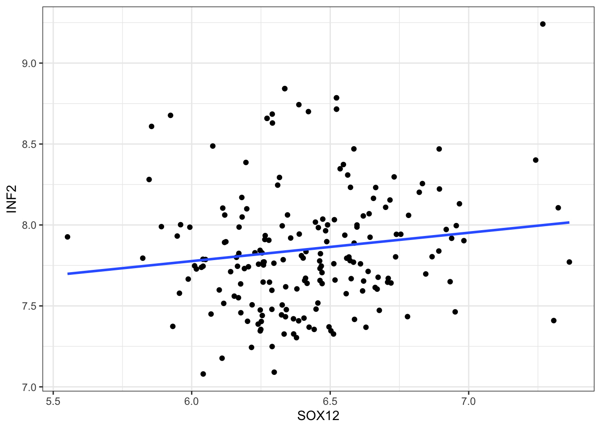
- Test in linear model if this two genes are dependent (correlated) or not: Q: Is the expression between your two genes lineary dependent (correlated)? (H0: no correlation) Plesase answer the question in writing! One sentence is enought.
GeneExpression %>%
lm(INF2 ~ SOX12, data = .) %>%
summary() %>%
tidy()# A tibble: 2 × 5
term estimate std.error statistic p.value
<chr> <dbl> <dbl> <dbl> <dbl>
1 (Intercept) 6.73 0.609 11.0 3.67e-22
2 SOX12 0.175 0.0947 1.85 6.60e- 2Bonus
- Bonus: In
mice weights dataset; Can you put together step 20 and 21 in one test that will test for diet and sex simultaneously ? (hint use linear model with covarietlm( y ~ x1 + x2 ))
model <- lm(body_weight ~ diet + sex, data = mice_weights)
summary(model) %>% tidy()# A tibble: 3 × 5
term estimate std.error statistic p.value
<chr> <dbl> <dbl> <dbl> <dbl>
1 (Intercept) 27.2 0.384 70.7 0
2 diethf 5.18 0.448 11.6 1.05e-28
3 sexM 8.85 0.448 19.8 1.00e-70Principal Component Analysis (PCA)
Run PCA on tissue expression dataset preferably use PCAtools package
If you do not have PCAtools install them with uncomenting and running following code:
# if (!require("BiocManager", quietly = TRUE))
# install.packages("BiocManager")
#
# BiocManager::install("PCAtools")library("PCAtools")Loading required package: ggrepel
Attaching package: 'PCAtools'The following objects are masked from 'package:stats':
biplot, screeplotTo help you reformat data, here is reformating step
data_4_pca <- GeneExpression %>%
select(-tissue) %>%
column_to_rownames("sample") %>%
t() %>%
as_tibble(rownames="geneID") %>%
column_to_rownames("geneID")
metadata_4_pca <- GeneExpression %>% # your_gene_expression
select(sample, tissue) %>%
column_to_rownames("sample")- run PCA
pca_expression <- pca(data_4_pca, metadata = metadata_4_pca)28 plot Screenplot that shows inportance of copmonents (hint use screeplot() function). Please do not plot all components 1:10 is enought! (hint components = 1:10)
screeplot(pca_expression, components = 1:10)Warning: Using `size` aesthetic for lines was deprecated in ggplot2 3.4.0.
ℹ Please use `linewidth` instead.
ℹ The deprecated feature was likely used in the PCAtools package.
Please report the issue to the authors.Warning: The `size` argument of `element_rect()` is deprecated as of ggplot2 3.4.0.
ℹ Please use the `linewidth` argument instead.
ℹ The deprecated feature was likely used in the PCAtools package.
Please report the issue to the authors.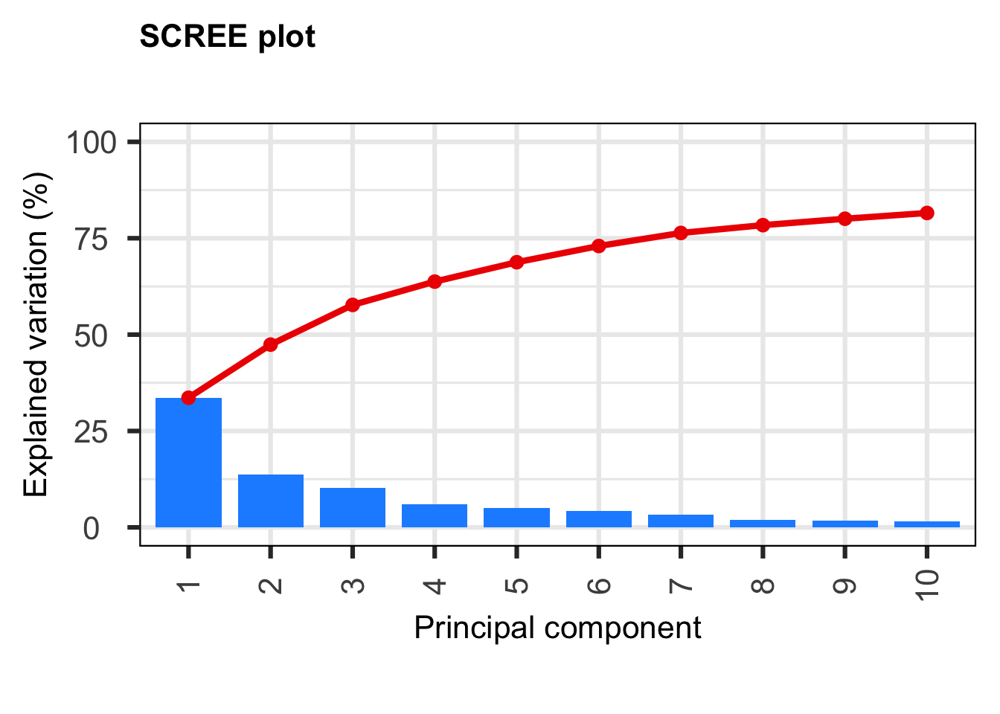
29 Make Scatter plot of few first PCs (hint use biplot and colby = 'tissue',)
biplot(pca_expression,
title = 'PC1 versus PC2',
x = 'PC1', y = 'PC2',
colby = 'tissue',
hline = 0,
vline = 0,
lab = NULL,
legendPosition = 'right',
axisLabSize = 10, titleLabSize = 14
)Ignoring unknown labels:
• fill : ""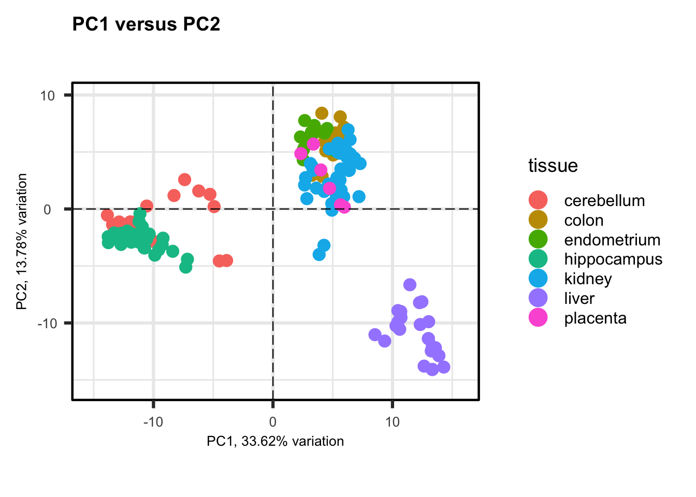